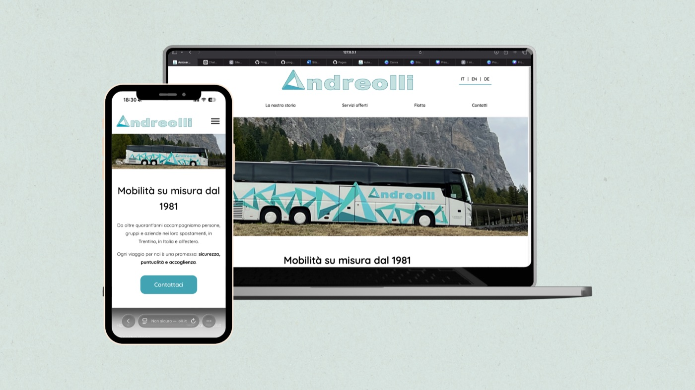
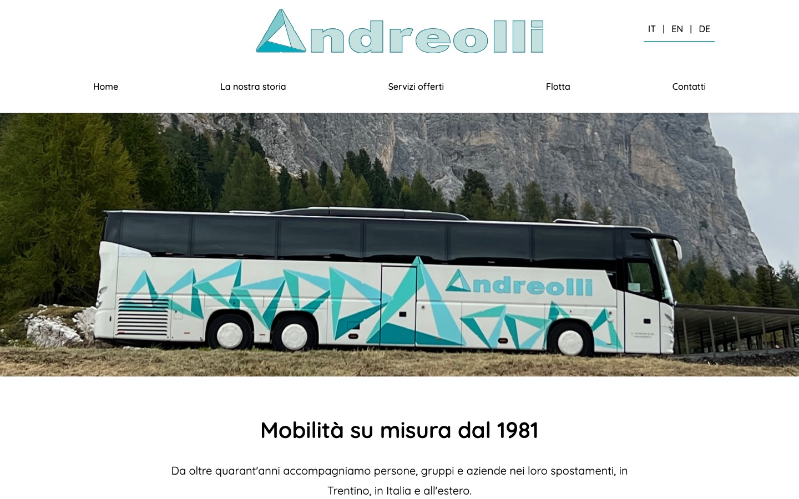
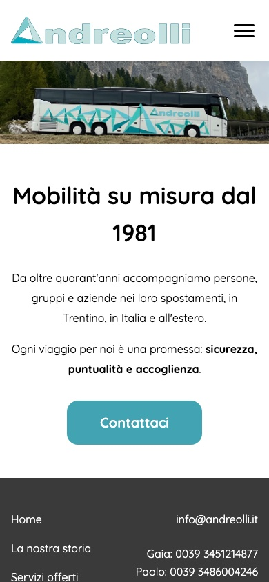

Autoservizi Andreolli
A transport company whose only online presence was a phone number. Now it has a website in three languages.
- Year
- 2025
- What I did
- Design, visuals, development, launch
- Tools
- Figma, Illustrator, HTML, CSS, JavaScript
- Online
- andreolli.it

The problem
Autoservizi Andreolli has been taking people, groups and companies around by coach since 1981, in Trentino, across Italy and abroad. It's my family's company, and until 2025 it had no website: anyone looking for it only found a phone number.
What I did
I designed and coded the website from scratch, in HTML, CSS and JavaScript, with no WordPress and no rented platforms. Five pages: the home page, the company's story across three generations, services, fleet and contacts, with a contact form.
The site is in Italian, English and German, and it was designed mobile-first.
The site today


How I got there
-
Understanding the business
What the site had to do, for whom, and which pages were really needed. I started from the existing logo.
-
Structure
I laid out the five pages for mobile first, then desktop.
-
Visual design
Colours taken from the logo, a soft and readable typeface, the same elements on every page.
-
Development and launch
I wrote the code, the three-language system and the contact form, then put the site live.
Is a phone number all you have too?
Tell me about your business: the first call is free.